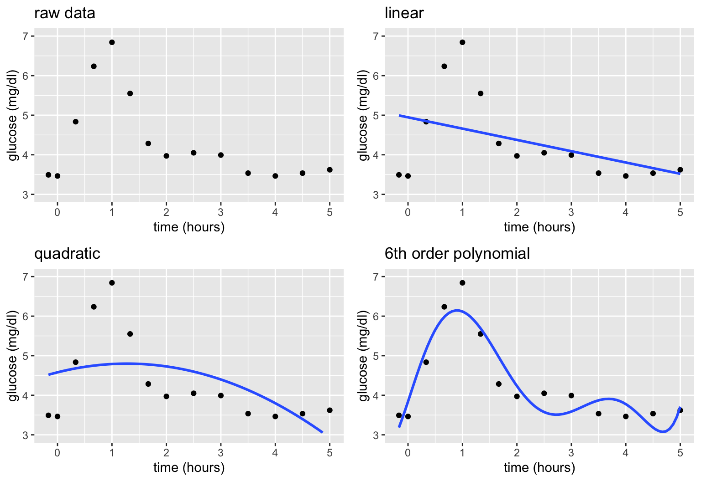
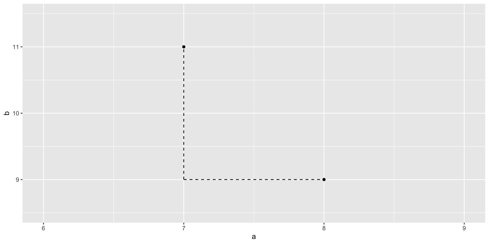
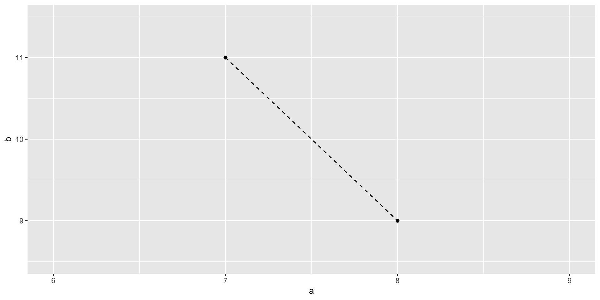
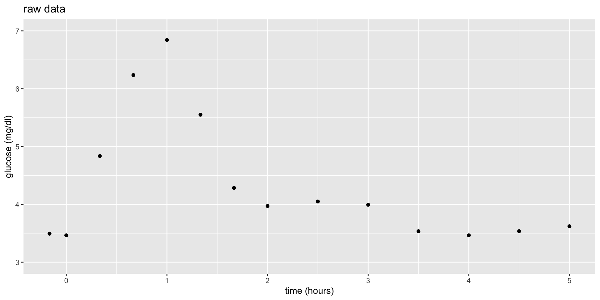

7 Nonparametric Models
Settling In
- Sit with your NEW assigned group
- You will stay in these groups for Unit 3 and work on a group assignment together outside of class
- Introduce yourselves and learn a bit about each other!
- Decide how you will communicate about the assignment (email or Slack) and exchange the relevant information
- Prepare to take notes (find today’s QMD template on the Schedule page as usual!)
- Check Slack for announcements about upcoming events
- Locate and review your STAT 253 Feedback spreadsheet
Homework Reminders
Check your work!
- Remember to submit an HTML (not a QMD) to Moodle for grading
- Please CHECK that HTML before submitting! In particular, make sure:
- your HTML includes your answers and not the original questions
- the formatting (headers, etc.) matches the provided template
- all plots and other output appear as intended
- Tip:
Renderas you go! This way you can catch issues early and won’t be in a rush to debug right before the submission deadline.
. . .
Late work:
- To help us manage the large number of assignments we need to review, we will be implementing an 8 hour automatic “grace period” for late submissions.
- If you need additional beyond this, you must email me to request an extension.
. . .
Extensions:
- For homework, I will grant ALL 1–3 day extension requests made in advance of the deadline.
- To request an extension, email me and tell me how much time you need. You do not need to give me a reason why you are requesting an extension.
- I cannot guarantee that I will be able to accommodate longer requests, or requests made after the deadline, so please plan accordingly.
. . .
Feedback:
- You will receive individual feedback on (almost all) questions and an overall score of PASS / REVISE / NO SUBMISSION
- You will access this feedback via your STAT 253 Feedback spreadsheet
- If your overall score is PASS this means:
- all of your answers were correct or almost correct
- although you have PASSed the assignment, there likely is still room for improvement! make sure you review your feedback and the solutions for all questions (even those marked as correct)
- If your overall score is REVISE this means:
- we noticed a few more areas for improvement in your work and think it could benefit from revision
- you will have one week to review your feedback, revise your responses, and resubmit
. . .
Revision process:
- Assignments that are submitted on time (or with an approved extension) and demonstrate effort to complete most problems are eligible for revision
- To prepare this revision, you should:
- carefully review feedback received on your original submission
- you may also consult the posted solutions (although you may not simply copy said solutions) or stop by office hours to discuss
- submit your revised HTML via Moodle within 1 week of receiving feedback
Notes: Nonparametric v. Parametric
Context

world = supervised learning
We want to model some output variable \(y\) using a set of potential predictors (\(x_1, x_2, ..., x_p\)).task = regression
\(y\) is quantitativemodel = nonparametric regression???
Goal
Just as in Unit 2, Unit 3 will focus on model building, but a different aspect:
- Unit 2: how do we handle / select predictors for our predictive model of \(y\)?
- Unit 3: how do we handle situations in which linear regression models are too rigid to capture the relationship of \(y\) vs \(x\)?
Motivating Example
Let’s build a predictive model of blood glucose level in mg/dl by time in hours (\(x\)) since eating a high carbohydrate meal.
Consider 3 linear regression models of \(y\), none of which appear to be very good:
\[\begin{array}{ll} \text{linear:} & y = f(x) + \varepsilon = \beta_0 + \beta_1 x + \varepsilon \\ \text{quadratic:} & y = f(x) + \varepsilon = \beta_0 + \beta_1 x + \beta_2 x^2 + \varepsilon \\ \text{6th order polynomial:} & y = f(x) + \varepsilon = \beta_0 + \beta_1 x + \beta_2 x^2 + \beta_3 x^3 + \beta_4 x^4 + \beta_5 x^5 + \beta_6 x^6 + \varepsilon \\ \end{array}\]
Parametric vs Nonparametric
These parametric linear regression models assume (incorrectly) that we can represent glucose over time by the following formula for \(f(x)\) that depends upon parameters \(\beta_i\):
\[y = f(x) + \varepsilon = \beta_0 + \beta_1x_1 + \cdots + \beta_p x_p + \varepsilon\]
Nonparametric models do NOT assume a parametric form for the relationship between \(y\) and \(x\), \(f(x)\). Thus they are more flexible.
Exercises
Be kind to yourself/each other and work as a group!
Part 1: Intuition
In Part 1, your task is to come up with a nonparametric algorithm to estimate \(f(\text{time})\) in the equation \[\text{glucose} = f(\text{time}) + \epsilon\]
- Make some nonparametric predictions
Working as a group, thinking nonparametrically, and utilizing the plot and data on the sheet provided, predict glucose level after:- 1.5 hours
- 4.25 hours
- \(x\) hours (i.e. what’s your general prediction process at any time point \(x\)?)
Solution
Will vary by group.- Build a nonparametric algorithm
Working as a group:- Translate your prediction process into a formal algorithm, i.e. step-by-step procedure or recipe, to predict glucose at any time point \(x\). THINK:
- Does this depend upon any tuning parameters? For example, did your prediction process use any assumed “thresholds” or quantities?
- If so, represent this tuning parameter as “t” and write your algorithm using t (not a tuned value for t).
- On the separate page provided, one person should summarize this algorithm and report the predictions you got using this algorithm.
- Translate your prediction process into a formal algorithm, i.e. step-by-step procedure or recipe, to predict glucose at any time point \(x\). THINK:
Solution
Will vary by group.- Test your algorithm
Exchange algorithms with another group.- Is the other group’s algorithm similar to yours?
- Use their algorithm to predict glucose after 1.5 hours and 4.25 hours. Do your calculations match theirs? If not, what was unclear about their algorithm that led to the discrepancy?
Solution
Will vary by group.- Building an algorithm as a class
- On your sheet, sketch a predictive model of glucose by time that a “good” algorithm would produce.
- In general, how would such an algorithm work? What would be its tuning parameter?
Solution
- smooth curve that follows the general trend
- tuning parameter = size of the windows or neighborhoods. in general, we’ll fit “models” within smaller windows
Part 2: Distance
Central to nonparametric modeling is the concept of using data points within some local window or neighborhood.
Defining a local window or neighborhood relies on the concept of distance.
With only one predictor, this was straightforward in our glucose example: the closest neighbors at time \(x\) are the data points observed at the closest time points.
GOAL
Explore the idea of distance when we have more predictors, and the data-preprocessing steps we have to take in order to implement this idea in practice.
- Two measures of distance
Consider data on 2 predictors for 2 students:
- student 1: 8 hours sleep Monday (\(a_1\)), 9 hours sleep Tuesday (\(b_1\))
- student 2: 7 hours sleep Monday (\(a_2\)), 11 hours sleep Tuesday (\(b_2\))
- Calculate the Manhattan distance between the 2 students. And why do you think this is called “Manhattan” distance?
\[|a_1 - a_2| + |b_1 - b_2|\]

- Calculate the Euclidean distance between the 2 students:
\[\sqrt{(a_1 - a_2)^2 + (b_1 - b_2)^2}\]

NOTE: We’ll typically use Euclidean distance in our algorithms. But for the purposes of this activity, use Manhattan distance (just since it’s easier to calculate and gets at the same ideas).
Solution
# a
abs(8 - 7) + abs(9 - 11)[1] 3# b
sqrt((8 - 7)^2 + (9 - 11)^2)[1] 2.236068- Who are my neighbors?
Consider two more possible predictors of some student outcome variable \(y\):
- \(x_1\) = number of days old
- \(x_2\) = major division (humanities, fine arts, social science, or natural science)
Calculate how many days old you are:
# Record dates in year-month-day format
today <- as.Date("2024-10-01")
bday <- as.Date("????-??-??")
# Calculate difference
difftime(today, bday, units = "days")Then for each scenario, identify which of your group members is your nearest neighbor, as defined by Manhattan distance:
- Using only \(x_1\).
- Using only \(x_2\). And how are you measuring the distance between students’ major divisions (categories not quantities)?!
- Using both \(x_1\) and \(x_2\)
Solution
Will vary by group.- Measuring distance: 2 quantitative predictors
Consider 2 more measures on another 3 students:
| Days Old | Distance from Campus | |
|---|---|---|
| student 1 | 7300 days | 0.1 hour |
| student 2 | 7304 days | 0.1 hour |
| student 3 | 7300 days | 3.1 hours |
Contextually, not mathematically, do you think student 1 is more similar to student 2 or student 3?
Calculate the mathematical Manhattan distance between: (1) students 1 and 2; and (2) students 1 and 3.
Do your contextual and mathematical assessments match? If not, what led to this discrepancy?
Solution
- My opinion: student 2. Being 4 days apart is more “similar” than 2 students that live 3 hours apart.
- students 1 and 2: \(|7300 - 7304| + |0.1 - 0.1| = 4\), students 1 and 3: \(|7300 - 7300| + |0.1 - 3.1| = 3\)
- student 3. nope. the variables are on different scales.
- Measuring distance: quantitative & categorical predictors
Let’s repeat for another 3 students:
| Major | Days Old | |
|---|---|---|
| student 1 | STAT | 7300 days |
| student 2 | STAT | 7302 days |
| student 3 | GEOG | 7300 days |
Contextually, do you think student 1 is more similar to student 2 or student 3?
Mathematically, calculate the Manhattan distance between: (1) students 1 and 2; and (2) students 1 and 3. NOTE: The distance between 2 different majors is 1.
Do your contextual and mathematical assessments match? If not, what led to this discrepancy?
Solution
- My opinion: student 2. Being 2 days apart is more “similar” than different majors.
- students 1 and 2: \(|1 - 1| + |7300 - 7302| = 2\), students 1 and 3: \(|1 - 0| + |7300 - 7300| = 1\)
- nope. the variables are on different scales.
Part 3: Pre-processing predictors
In nonparametric modeling, we don’t want our definitions of “local windows” or “neighbors” to be skewed by the scales and structures of our predictors.
It’s therefore important to create variable recipes which pre-process our predictors before feeding them into a nonparametric algorithm.
Let’s explore this idea using the bikes data to model rides by temp, season, and breakdowns:
# Load some packages
library(tidyverse)
library(tidymodels)
# Load the bikes data and do a little data cleaning
bikes <- read.csv("https://kegrinde.github.io/stat253_coursenotes/data/bike_share.csv") %>%
rename(rides = riders_registered, temp = temp_feel) %>%
mutate(temp = round(temp)) %>%
mutate(breakdowns = sample(c(rep(0, 728), rep(1, 3)), 731, replace = FALSE)) %>%
select(temp, season, breakdowns, rides)
- Standardizing quantitative predictors
Let’s standardize or normalize the 2 quantitative predictors,tempandbreakdowns, to the same scale: centered at 0 with a standard deviation of 1. Run and reflect upon each chunk below:
# Recipe with 1 preprocessing step
recipe_1 <- recipe(rides ~ ., data = bikes) %>%
step_normalize(all_numeric_predictors())
# Check it out
recipe_1# Check out the first 3 rows of the pre-processed data
# (Don't worry about the code. Normally we won't do this step.)
recipe_1 %>%
prep() %>%
bake(new_data = bikes) %>%
head(3)# Compare to first 3 rows of original data
bikes %>%
head(3)Follow-up questions & comments
- Take note of how the pre-processed data compares to the original.
- The first day had a
tempof 65 degrees and a standardizedtempof -0.66, i.e. 65 degrees is 0.66 standard deviations below average. Confirm this standardized value “by hand” using the mean and standard deviation intemp:
bikes %>%
summarize(mean(temp), sd(temp))
# Standardized temp: (observed - mean) / sd
(___ - ___) / ___Solution
# Recipe with 1 preprocessing step
recipe_1 <- recipe(rides ~ ., data = bikes) %>%
step_normalize(all_numeric_predictors())
# Check it out
recipe_1── Recipe ──────────────────────────────────────────────────────────────────────── Inputs Number of variables by roleoutcome: 1
predictor: 3── Operations • Centering and scaling for: all_numeric_predictors()# Check out the first 3 rows of the pre-processed data
# (Don't worry about the code. Normally we won't do this step.)
recipe_1 %>%
prep() %>%
bake(new_data = bikes) %>%
head(3)# A tibble: 3 × 4
temp season breakdowns rides
<dbl> <fct> <dbl> <int>
1 -0.660 winter -0.0642 654
2 -0.728 winter -0.0642 670
3 -1.75 winter -0.0642 1229# Compare to first 3 rows of original data
bikes %>%
head(3) temp season breakdowns rides
1 65 winter 0 654
2 64 winter 0 670
3 49 winter 0 1229Follow-up questions
- The numeric predictors, but not rides, were standardized.
- See below.
bikes %>%
summarize(mean(temp), sd(temp)) mean(temp) sd(temp)
1 74.69083 14.67838(65 - 74.69083) / 14.67838[1] -0.6602111- Creating “dummy” variables for categorical predictors
Consider the categoricalseasonpredictor: fall, winter, spring, summer. Since we can’t plug words into a mathematical formula, ML algorithms convert categorical predictors into “dummy variables”, also known as indicator variables. (This is unfortunately the technical term, not something I’m making up.) Run and reflect upon each chunk below:
# Recipe with 1 preprocessing step
recipe_2 <- recipe(rides ~ ., data = bikes) %>%
step_dummy(all_nominal_predictors())# Check out 3 specific rows of the pre-processed data
# (Don't worry about the code.)
recipe_2 %>%
prep() %>%
bake(new_data = bikes) %>%
filter(rides %in% c(655, 674))# Compare to the same 3 rows in the original data
bikes %>%
filter(rides %in% c(655, 674))Follow-up questions & comments
- 3 of the 4 seasons show up in the pre-processed data as “dummy variables” with 0/1 outcomes. Which season does not appear? This “reference” category is also the one that wouldn’t appear in a table of model coefficients.
- How is a
winterday represented by the 3 dummy variables? - How is a
fallday represented by the 3 dummy variables?
Solution
# Recipe with 1 preprocessing step
recipe_2 <- recipe(rides ~ ., data = bikes) %>%
step_dummy(all_nominal_predictors())
# Check it out
recipe_2── Recipe ──────────────────────────────────────────────────────────────────────── Inputs Number of variables by roleoutcome: 1
predictor: 3── Operations • Dummy variables from: all_nominal_predictors()# Check out 3 specific rows of the pre-processed data
# (Don't worry about the code.)
recipe_2 %>%
prep() %>%
bake(new_data = bikes) %>%
filter(rides %in% c(655, 674))# A tibble: 3 × 6
temp breakdowns rides season_spring season_summer season_winter
<dbl> <dbl> <int> <dbl> <dbl> <dbl>
1 53 0 674 0 0 1
2 70 0 674 1 0 0
3 68 0 655 0 0 0# Compare to the same 3 rows in the original data
bikes %>%
filter(rides %in% c(655, 674)) temp season breakdowns rides
1 53 winter 0 674
2 70 spring 0 674
3 68 fall 0 655Follow-up questions
- fall
- 0 for spring and summer, 1 for winter
- 0 for spring, summer, and winter
- Combining pre-processing steps
We can also do multiple pre-processing steps! In some cases, order matters. Compare the results of normalizing before creating dummy variables and vice versa:
# step_normalize() before step_dummy()
recipe(rides ~ ., data = bikes) %>%
step_normalize(all_numeric_predictors()) %>%
step_dummy(all_nominal_predictors()) %>%
prep() %>%
bake(new_data = bikes) %>%
filter(rides %in% c(655, 674))# step_dummy() before step_normalize()
recipe(rides ~ ., data = bikes) %>%
step_dummy(all_nominal_predictors()) %>%
step_normalize(all_numeric_predictors()) %>%
prep() %>%
bake(new_data = bikes) %>%
filter(rides %in% c(655, 674))Follow-up questions / comments
- How did the order of our 2 pre-processing steps impact the outcome?
- The standardized dummy variables lose some contextual meaning. But, in general, negative values correspond to 0s (not that category), positive values correspond to 1s (in that category), and the further a value is from zero, the less common that category is. We’ll observe in the future how this is advantageous when defining “neighbors”.
Solution
# step_normalize() before step_dummy()
recipe(rides ~ ., data = bikes) %>%
step_normalize(all_numeric_predictors()) %>%
step_dummy(all_nominal_predictors()) %>%
prep() %>%
bake(new_data = bikes) %>%
filter(rides %in% c(655, 674))# A tibble: 3 × 6
temp breakdowns rides season_spring season_summer season_winter
<dbl> <dbl> <int> <dbl> <dbl> <dbl>
1 -1.48 -0.0642 674 0 0 1
2 -0.320 -0.0642 674 1 0 0
3 -0.456 -0.0642 655 0 0 0# step_dummy() before step_normalize()
recipe(rides ~ ., data = bikes) %>%
step_dummy(all_nominal_predictors()) %>%
step_normalize(all_numeric_predictors()) %>%
prep() %>%
bake(new_data = bikes) %>%
filter(rides %in% c(655, 674))# A tibble: 3 × 6
temp breakdowns rides season_spring season_summer season_winter
<dbl> <dbl> <int> <dbl> <dbl> <dbl>
1 -1.48 -0.0642 674 -0.580 -0.588 1.74
2 -0.320 -0.0642 674 1.72 -0.588 -0.573
3 -0.456 -0.0642 655 -0.580 -0.588 -0.573Follow-up questions / comments
- when dummies are created second, they remain as 0s and 1s. when dummies are created first, these 0s and 1s are standardized
PAUSE
Though our current focus is on nonparametric modeling, the concepts of standardizing and dummy variables are also important in parametric modeling.
| algorithm | pre-processing step | necessary? | done automatically behind the R code? |
|---|---|---|---|
| least squares | standardizing | no | no (because it’s not necessary!) |
| dummy variables | yes | yes | |
| LASSO | standardizing | yes | yes |
| dummy variables | yes | no (we have to pre-process) |
- Less common: Removing variables with “near-zero variance”
Notice that on almost every day in our sample, there were 0 bike station breakdowns. Thus there is near-zero variability (nzv) in thebreakdownspredictor:
bikes %>%
count(breakdowns)This extreme predictor could bias our model results – the rare days with 1 breakdown might seem more important than they are, thus have undue influence. To this end, we can use step_nzv():
# Recipe with 3 preprocessing steps
recipe_3 <- recipe(rides ~ ., data = bikes) %>%
step_nzv(all_predictors()) %>%
step_dummy(all_nominal_predictors()) %>%
step_normalize(all_numeric_predictors())# Check out the first 3 rows of the pre-processed data
# (Don't worry about the code.)
recipe_3 %>%
prep() %>%
bake(new_data = bikes) %>%
head(3)# Compare to this to the first 3 rows in the original data
bikes %>%
head(3)Follow-up questions
- What did
step_nzv()do?! - We could move
step_nzv()to the last step in our recipe. But what advantage is there to putting it first?
Solution
# Recipe with 3 preprocessing steps
recipe_3 <- recipe(rides ~ ., data = bikes) %>%
step_nzv(all_predictors()) %>%
step_dummy(all_nominal_predictors()) %>%
step_normalize(all_numeric_predictors())
# Check out the first 3 rows of the pre-processed data
# (Don't worry about the code.)
recipe_3 %>%
prep() %>%
bake(new_data = bikes) %>%
head(3)# A tibble: 3 × 5
temp rides season_spring season_summer season_winter
<dbl> <int> <dbl> <dbl> <dbl>
1 -0.660 654 -0.580 -0.588 1.74
2 -0.728 670 -0.580 -0.588 1.74
3 -1.75 1229 -0.580 -0.588 1.74# Compare to this to the first 3 rows in the original data
bikes %>%
head(3) temp season breakdowns rides
1 65 winter 0 654
2 64 winter 0 670
3 49 winter 0 1229Follow-up questions
- it removed
breakdownsfrom the data set. - more computationally efficient. don’t spend extra energy on pre-processing
breakdownssince we don’t even want to keep it.
- There’s lots more!
The 3 pre-processing steps above are among the most common. Many others exist and can be handy in specific situations. Run the code below to get a list of possibilities:
ls("package:recipes")[startsWith(ls("package:recipes"), "step_")]
Part 4: Optional
If you complete the above exercises in class, you should try the remaining exercises.
Otherwise, you do not need to loop back – these concepts will be covered in the videos for the next class.
- KNN
Now that we have a sense of some themes (defining “local”) and details (measuring “distance”) in nonparametric modeling, let’s explore a common nonparametric algorithm: K Nearest Neighbors (KNN). Let’s start with your intuition for how the KNN works, simply based on its name. On your paper, sketch what you anticipate the following models of the 14 glucose measurements to look like:
- \(K = 1\) nearest neighbors model
- \(K = 14\) nearest neighbors model
NOTE: You might start by making predictions at each observed time point (eg: 0, 15 min, 30 min,…). Then think about what the predictions would be for times in between these observations (eg: 5 min).

Solution
Will vary by group.- Thinking like a machine learner
- Upon what tuning parameter does KNN depend?
- What’s the smallest value this tuning parameter can take? The biggest?
- Selecting a “good” tuning parameter is a goldilocks challenge:
- What happens when the tuning parameter is too small?
- Too big?
- What happens when the tuning parameter is too small?
Solution
- number of neighbors “K”
- 1, 2, …., n (sample size)
- When K is too small, our model is too flexible / overfit. When K is too big, our model is too rigid / simple.
- Done!
- Render your notes.
- Check the solutions on the course website.
- If you finish all that during class, work on homework!
Wrap-Up
Main Points from Today
- If the relationship between \(x\) and \(y\) is not a straight line or a polynomial (such as quadratic), we might need nonparametric methods.
- One needs to consider the scale of variables when calculating distance between observations with more than one predictor.
- Pre-processing steps invoke important assumptions that impact your models and predictions.
After Class
- Finish the activity, check the solutions, and reach out with questions!
- Submit HW2 by 11:59 pm TONIGHT
- Note the 8-hour grace period / submission cut-off on Moodle
- Before our next class:
- Complete CP6
- Install the
kknnandshinypackages
- Other things to get started on:
- HW1 revisions (due within one week of receiving feedback)
- HW3 (due Thursday, Oct 10) will be posted soon!